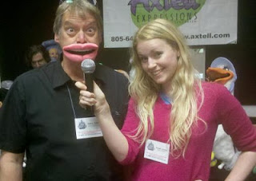

The MASK?
1/8/2013
The MASK?
Question: Could direct me to a source where I could purchase the strap on ventriloquist mouth piece which is placed on the helper and the ventriloquist operates the mouth movement with a cable /air line?
* * * * *
From Mr. D: I receive this inquiry rather frequently, but unfortunately, I do not know of a source for the "ventriloquist mask". Maybe someone reading this knows?
I do know Steve Axtell's "Mic Mouth", used for the same purpose, is a very effective option (and in some ways better, in my opinion). Check it out: http://www.axtell.com/micmouth.html
Question: Could direct me to a source where I could purchase the strap on ventriloquist mouth piece which is placed on the helper and the ventriloquist operates the mouth movement with a cable /air line?
 |
| SARAH JONES from Australia uses the MIC-MOUTH on Steve Axtell |
{kind=link}
From Mr. D: I receive this inquiry rather frequently, but unfortunately, I do not know of a source for the "ventriloquist mask". Maybe someone reading this knows?
I do know Steve Axtell's "Mic Mouth", used for the same purpose, is a very effective option (and in some ways better, in my opinion). Check it out: http://www.axtell.com/micmouth.html